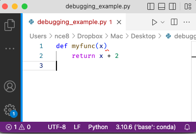

Principles and Tools for Debugging#
We all make mistakes when writing code—ALL of us. And yes, even expert programmers make mistakes. The difference between the pros and the rest is the ability to minimize those mistakes through the use of best practices and the ability to quickly and efficiently (a) identify the issue, through testing, for example, and (b) find the source of the problem and correct it. But how can we most effectively find the source of our problems once detected?
In this reading, we will talk about the two main types of problems (colloquially referred to as “bugs”) you are likely to find in your code before then turning to the types of tools and strategies that are available for helping you find and solve these problems.
Table of Contents#
Types of bugs
Debugging tools
print()statementsDebuggers
Types of bugs#
There are two main types of bugs in programming: syntax errors and logical errors.
1. Syntax errors#
These are errors in your code that prevent your code from running. For example, if you forgot to indent correctly in a Python function or left the colon off the end of line with a for loop. These are generally easy to identify without the need for tools simply because the program won’t run, and Python will helpfully tell you the line where the mistake is located.
def myfunc(x)
return x + 2
This results in the following error:
File "<ipython-input-1-a52aba7de6d5>", line 1
def myfunc(x)
^
SyntaxError: invalid syntax
(This reading is meant to follow our video on interpreting Python Tracebacks, so if you haven’t watched that yet go take a look at it now.)
Indeed, these are so easy for computers to detect many syntax errors that your computer will actually warn you about many of them as you’re writing your code using a “linter.” A linter is a program that runs in the background of an editor (like VS Code) that continually checks your code for basic syntax errors. For example, if I put the code above in VS Code, the editor will actually try to warn me of my error in three different ways before I ever even hit run:

the file name has turned red,
there’s a red squiggle where the colon is missing,
in the bottom left, there’s a 1 next to the “Error” counter (the circle with an X).
While it’s easy to see where a syntax error has occurred, however, as we’ll discuss below when the error isn’t as simple as a missing colon, solving the error can be a little trickier.
2. Logic errors#
The more nefarious type of bug is a logic error—a problem with your code that results in your code doing something unintended, but not causing the program to stop execution. In other words, bugs caused by logic errors are bugs that Python can’t see because they aren’t a problem with the code in the sense that Python can’t figure out what to do, but rather a problem where you (unwittingly) wrote valid Python code that just doesn’t do what you thought it did.
These bugs can come in many forms and are generally much harder to identify than syntax errors. For example, let’s say we write a function to raise one number to the power of the other number, and we want to compute \(a^b\) where we want to calculate \(5^2\). So we write the code below:
def myfunc(a, b):
return a**b
a = 2
b = 5
c = myfunc(a, b)
c
32
That’s clearly not 25 and we can see why - we didn’t put the inputs in the correct order, so we computed \(2^5\) instead of \(5^2\). In this case, however, the code runs fine, it just doesn’t run correctly. These types of errors can be far more pernicious than syntax errors since the code doesn’t throw an immediate fit. This assumes that the underlying logic of the algorithm is correct, but that there’s a typo in the code or an issue with some of the data structures or packages that were used. Consider the following example that’s a bit trickier. Let’s say we wanted to calculate both the sum of the values in a list (\(\sum_{i=1}^{N} x_i\)) and the sum of the squares in the list (\(\sum_{i=1}^{N} x_i\)). And as input we give it \([1,2,3]\). What we would want to see as output are: $\(\sum_{i=1}^{N} x_i = 1 + 2 + 3 = 6\)$
and
Here’s a code to accomplish that:
def myfunc(A):
# Create a copy of the list and square all of it's entries
B = A
for i, b in enumerate(B):
B[i] = b**2
# Sum up the entries of each list and return them
return [sum(A), sum(B)]
mylist = [1, 2, 3]
result = myfunc(mylist)
result
[14, 14]
Clearly the first sum is incorrect since we expected the output to be \([6, 14]\). This case has a more subtle error. Did you spot it? It’s because of the line B=A, which passes a reference to A, but does not make a copy of A. So when we square each of the entries of B using B[i] = b**2, we are actually squaring the values of both A and B. We can fix this by making a copy of A instead:
def myfunc(A):
# Create a copy of the list and square all of it's entries
B = A.copy()
for i, b in enumerate(B):
B[i] = b**2
# Sum up the entries of each list and return them
return [sum(A), sum(B)]
mylist = [1, 2, 3]
result = myfunc(mylist)
result
[6, 14]
Because fixing logical errors (e.g., fixing our bugs, or in the lingo debugging our code) requires developing a deeper understanding of what our code is actually doing, we generally can’t solve the problem just by staring at our code—we need tools that will allow us to poke around and better understand what’s going on as the code executes. And that’s the realm of debugging tools!
3. When logical errors cause syntax errors#
I know we said there are two main types of errors, but it’s worth noting that sometimes logical errors will give rise to syntax errors, which can be very confusing. That’s because when you get a syntax error, your eye immediately goes to the line where the error occurred. But if the syntax error is the result of a logical error further up in the code, then the location given in the Traceback may be a little misleading.
For example, consider this code designed to take a list of inputs and add them up, converting numbers stored as strings into numbers first:
def add_up_entries(the_list):
total = 0
for i in the_list:
if type(total) == str:
total = float(total)
total += i
return total
If I run this with only numbers in a list, we don’t have any problems:
add_up_entries([1, 2, 3])
6
But if I include a number stored as a string in the list (which the function is supposed to convert into a float), I get this error:
add_up_entries([1, "2", 3])
---------------------------------------------------------------------------
TypeError Traceback (most recent call last)
/Users/nce8/github/debugging/debugging_in_vscode.ipynb Cell 12 in <cell line: 1>()
----> 1 add_up_entries([1, "2", 3])
/Users/nce8/github/debugging/debugging_in_vscode.ipynb Cell 12 in add_up_entries(the_list)
4 if type(total) == str:
5 total = float(total)
----> 6 total += i
7 return total
TypeError: unsupported operand type(s) for +=: 'int' and 'str'
Well HUH! I don’t see anything wrong with line 6 where we add entry i from the list to total, so what on earth happened?
This is an example of a logical error (line four should have read if type(i) == str:, not if type(total) == str:) that gave rise to a syntax error downstream in the code.
So if you see a syntax error, always remember that you know your problem occurred at the error or above, but it may be a syntax error or a logical error caused by the code above!
Debugging Tools#
How you choose to debug your code depends a lot on both personal taste and the type of code you’re writing. For example, if you’re writing a simple linear script—for example, loading a DataFrame, cleaning some columns, doing some merges, etc.—then you can generally find your problems just by running your code one line at a time.
But things get more difficulty when your code becomes more complicated through the use of loops or functions. That’s because when problems occur in this kind of code, to understand the problem we often have to really understand what’s going on inside these environments.
Thankfully, there are two main tools for this: our trusty print() statement, and a fully featured debugger. Let’s talk about each in turn.
1. Debugging with print() statements#
Few tools are as popular for debugging as the good ol’ print() statement. It’s always available (it’s in the standard library, and any system that can run Python can print!), and super easy to use.
Let’s explore the simple function below and see how we may be able to identify the source of the problem through debugging with the print() statement. Let’s say we want to calculate the factorial of a number. A factorial is defined as:
$\(n!=n \times (n-1) \times (n-2) \times \cdots \times 2 \times 1\)$
For example, the factorial of the integers \(1\) through \(4\) are given as:
\(n\) |
\(n!\) |
|---|---|
1 |
1 |
2 |
2 |
3 |
6 |
4 |
24 |
Now let’s suggest a function to accomplish this:
def factorial(n):
if n == 1 or n == 0:
return 1
else:
fact = 1
for i in range(n):
fact *= i
return fact
And let’s test to see whether that function works by evaluating the factorial of the integers 1 through 4:
for i in [1, 2, 3, 4]:
print(f"{i}! = {factorial(i)}")
1! = 1
2! = 0
3! = 0
4! = 0
It clearly does NOT work for integers 3, 4, and 5. Let’s see if we can find out why using print(). What we’re interested in, is what’s going on in lines 5-8 since those conditions are incorrect. Let’s add in some print() statements:
def factorial(n):
if n == 1 or n == 0:
return 1
else:
fact = 1
for i in range(n):
print(f"i = {i}")
print(f"fact = {fact}")
fact *= i
return fact
Now let’s run the program again for one of the problematic values, 2:
v = 2
print(f"{v}! = {factorial(v)}")
i = 0
fact = 1
i = 1
fact = 0
2! = 0
Now we can see that the problem here occurs because i begins at 0 rather than 1 and therefore is multiplying everything by 0, canceling the results. Now we can correct that by using \(i + 1\) instead of \(i\). Let’s make that adjustment and see how it works:
def factorial(n):
if n == 1 or n == 0:
return 1
else:
fact = 1
for i in range(n):
print(f"i = {i+1}")
print(f"fact = {fact}")
fact *= i + 1
return fact
v = 2
print(f"{v}! = {factorial(v)}")
i = 1
fact = 1
i = 2
fact = 1
2! = 2
This is encouraging! Now let’s try the rest of the values, but remove the print() statements first so we can easily read the results:
def factorial(n):
if n == 1 or n == 0:
return 1
else:
fact = 1
for i in range(n):
fact *= i + 1
return fact
for i in [1, 2, 3, 4]:
print(f"{i}! = {factorial(i)}")
1! = 1
2! = 2
3! = 6
4! = 24
So this approach can certainly work, as it did here. Sometime for quick errors in small programs this can work perfectly well, since the best debugging tool is the one that helps you to achieve your solution. However, we had to frequently made adjustments directly within the code and we either had to delete or comment those out to remove them. This is not ideal for large programs as this can introduce the possibility of introducing errors through those edits that are made.
Pro-Tip: It’s so common when doing debugging to want to print out something like The value of x is NUMBER that Python has an inbuilt shortcut for writing this: f"{x=}"! Just add an equal sign after a variable name and Python will interpolate both the variable name and the value of the variable:
x = 42
print(f"{x=}")
x=42
2. Debuggers#
If print() is the duct tape of debugging—a little ugly, but always dependable for a quick fix!—debuggers are the ten million dollar, high-precision, ultra-fast, carbon-fiber/titanium… ok that analogy got away from me a little, but hopefully you get the idea: where print is quick and simple, a debugger is an incredibly powerful tool for understanding your program inside and out.
The basic idea of a debugger is that it allows you to take full control over the execution of your program—you can run your code one step at a time, and see the value of all variables and all function calls as they evolve. In other words, you can step through your Python code as it works through each pass of a loop, or as it moves from one function call to another, and see exactly how things are changing.
I recognize that sounds abstract, so let’s move to the next reading in which we explore how the debugger works in VS Code. While this next reading is explicitly about the VS Code Python debugger, be aware that while some things about the lesson are VS Code specific—which button does what, where outputs are printed, etc.—the VS Code Python debugger is a pretty standard example of a debugger, and you’ll find the same functionality not just in other editors, but also in other programming languages. Indeed, you can even get the same functionality in a vanilla Python terminal with a package called pdb!